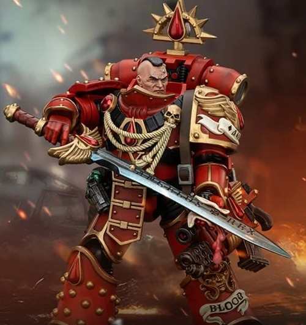
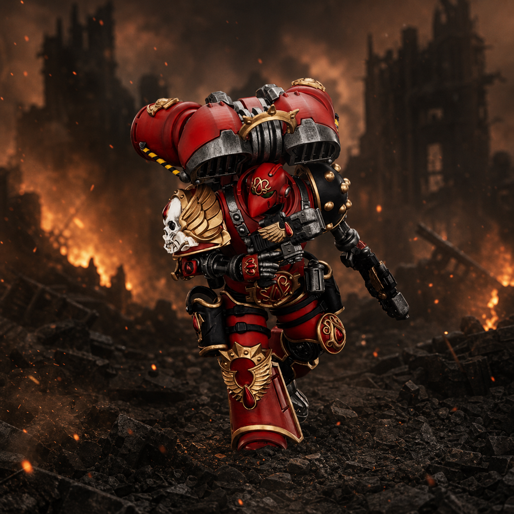

Premier Capitaine des Blood Angels

Fils des tribus chasseresses de Baal Primus, il est de ceux que Sanguinius est allé chercher lui-même sous l'Arx Angelicum. Le Primarque en fit son premier Capitaine — préférant à la discipline inflexible d'un Azkaellon la souplesse d'un homme capable de lire le cœur de ses frères. On le dit taciturne, mais nul officier de la Légion ne connaît mieux le tempérament de ceux qu'il commande, ni ne sait mieux plier un ordre de bataille à l'instant où il se brise.
À Signus Prime, il conduit l'assaut sur la Cathédrale de la Marque quand Sanguinius tombe sous les coups du Bloodthirster Ka'Bandha. Au Siège de Terra, on lui confie la porte Hélios ; aux côtés du capitaine Maximus Thane des Imperial Fists, il y abat Gendor Skraivok, commandeur des Night Lords. Il n'en réclame ni titre ni chant : les Anges Sanglants l'appellent simplement l'ensanglanté, et cela lui suffit.
État-major du Bataillon

Ancien sergent d'escouade Destructeur, il a gagné sur les mondes de Compliance le surnom de Porteur de Chagrin — pour la manière dont il y menait la guerre. Une lame xenos lui a pris les bras et une jambe ; des tech-prêtres l'ont reconstruit pièce à pièce, et certains, depuis, l'appellent le Deux-fois-né. Musicien accompli avant l'Hérésie, il tient aujourd'hui la Soif en laisse, et ne la laisse parler qu'au combat.
Comme tout Apothicaire de la Légion, il porte un double fardeau : arracher le progénoïde aux morts avant que la lignée ne se perde, et consigner, frère par frère, les premiers signes de la Soif Rouge — ce mal que Sanguinius lui-même n'a jamais su nommer devant ses fils. Ses rapports ne remontent qu'à Raldoron ; nul autre n'a le droit de les lire.
Compagnies du Bataillon
Compagnie de vétérans du Ier Chapitre, héritière des rites de la Grande Croisade. Elle ne combat jamais dès l'ouverture d'un assaut, mais au point où la bataille bascule — et Raldoron seul décide de ce moment.
Un cénacle formé sur les mondes de la Grande Croisade, où l'on n'entrait qu'en remplaçant un mort. Sepatus les mène là où deux assauts ont déjà échoué ; dans la Légion, on dit que la troisième tentative cède toujours aux Écarlates.
Dix vétérans en formation coin, boucliers verrouillés, un pas par seconde — une tactique que le Ier Chapitre pratique depuis les guerres de Compliance. Le feu se casse sur eux, et le Bataillon passe derrière.
Guerriers réservés aux missions les plus brutales et moralement douteuses — extermination, armes interdites, anéantissement de populations jugées irrécupérables. Chaque membre, un Erelim, incarne la colère de Sanguinius là où la pitié n'a plus sa place. Spécialistes de la guerre sale — radiations, poisons, exécutions à bout portant — ils dissimulent leur visage sous un masque argenté, seul signe visible d'une unité que le reste de la Légion préfère ne pas nommer autrement que Lame Brisée ou Main Morte.
Compagnie de ligne de la IXe Légion, l'une des plus anciennes en âge de service. Elle tient le point d'ancrage d'où se déploie tout l'assaut, et ne laisse jamais l'ennemi refermer derrière elle ce qu'elle vient d'ouvrir.
La discipline de tir la plus austère du Chapitre — rare vertu chez des fils de Sanguinius plus prompts au corps à corps. Ils tiennent la ligne qu'une autre escouade a ouverte à la lame, et n'en réclament jamais le crédit ; c'est pour cela que Raldoron les cite plus souvent que les autres.
Levée après l'anéantissement de sa compagnie d'origine sur un monde que les registres de la Légion citent à peine ; l'ancien numéro reste peint sous le neuf, en mémoire. Ils marchent d'un pas plus long que le règlement ne l'autorise — une manière, disent-ils, de rattraper ceux qu'ils ont perdus.
Épées tronçonneuses, coudes, à bout portant. Sur les mondes de Compliance comme dans les entrailles d'un vaisseau ennemi, ce sont eux qu'on envoie nettoyer ce que l'artillerie a laissé debout — et ce qui en ressort n'est jamais consigné dans les rapports du Chapitre.
Ils avancent en formation serrée, en silence, et comptent à voix basse les portes franchies — une habitude prise sur tant de mondes qu'aucun d'eux ne sait plus dire laquelle l'a fait naître. Le sergent jure que le compte importe ; il ne dit jamais à quel nombre il compte s'arrêter.
Moyens du Bataillon
Un seul module descend avec la force ; les autres restent en soute, prêts pour une extraction que Raldoron n'a jamais demandée. Le vault, lui, doit remonter.
Un sarcophage, deux servitors, un techmarine qui refuse de commenter l'état du pilote depuis que la forge a commencé à répondre à son chant.
Ordre de mission — Yarath-Maximal
« Ce qui dort à Yarath rentrera à Baal — ou ne sera lu par personne. »
Le Bataillon n'est pas venu lire le vault de logique Kaustos-Alpha : il est venu l'emporter. Raldoron a reçu l'ordre d'agir sans attendre de renfort — l'Ange a autre chose à porter ailleurs.
Victoire personnelle : les archives quittent le système sans que la Neuvième Fraternité les ait lues.
État récapitulatif
| Désignation | Effectif | Points |
|---|---|---|
| Raldoron, Maître du Ier Chapitre | 1 | 180 |
| Dominion Zephon | 1 | 185 |
| Apothicaire Vaelor | 1 | 30 |
| Paladins Écarlates | 5 | 225 |
| Escouade Vétérans Brécheuse | 10 | 265 |
| Les Larmes de l'Ange | 5 | 200 |
| Escouade Tactique (×2) | 20 | 260 |
| Escouade Nettoyeuse (×2) | 20 | 300 |
| Dreadnought Incaendius « Talos » | 1 | 230 |
| Module de largage | 1 | 50 |
| Total force engagée | 1 925 |